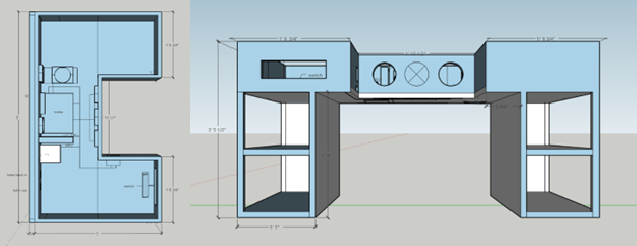
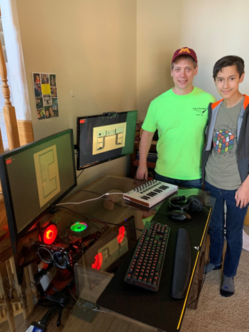

Computer Desk Build Writeup
Luke Krier / December 2021
The Desk PC is a project I started with my dad in the Spring of 2020. It took until the Fall of 2021 to complete it, consisting of off and on progress over the weekends. The initial idea for this project came from the Linus’ Tech Tips video series of the same name (linked below). Enormous thanks to Bob and Loren of Villuame Industries who helped with the design of the cuts and cutting the wood. And of course, this project could not have been done without the help of my dad, who, honestly, deserves just as much credit as myself. In respect of his contribution, as I go through the different steps of the build, I will ask the question he asked me: “next time, what should we have done differently?” For it is only by reflection and thought that we improve.
Design
Modeled closely off the design that Linus’ Tech Tips used, the desk’s distinctive feature is the U-shaped cavity that holds all of the computer hardware. However, the design deviates in several keyways. First, my design has two bookshelves for storage as the legs to hold it up. Second, the main components (CPU, GPU, Motherboard, etc.) are moved to the center of the desk in order to maintain the spectacle without having to spend an inordinate amount of money on water-cooling radiators. Finally, a roughly two-inch grommet is attached to the back edge of the desk so that I could attach a monitor stand to the back of my desk. All of my previous desks did not have a grommet and I repeatedly thought about, over multiple times, wanting a hanging monitor stand. So, this feature was a high priority on my list. The 3D mockup design is shown below.
The second part of the design phase was making sure it would work in real life. The task
was making sure that we could, one, cut the wood and it would make the design and, two, make
sure that once it was assembled that it wouldn’t fall over. The first part was very simple. The
desk has no curves or odd shapes that wood cannot easily make. It is rectangles all the way
down. The second part was a little trickier. The conclusion we came to was to split the desk into
two main sections. First, we would have the “hull” of the desk. This consisted of the baseplate
for the computer and all the rims except the back. The back would be attached to the second part,
which consisted of both shelves connected by the back to form a singular piece. Then these two
would be attached and finally, the star of the show, a glass tabletop bought for $5 on craigslist
would be placed on top of the hull separated by little rubber grommets.
Finally, all that needed to happen was to format how the individual pieces slotted
together on the wood panels to be cut. For this, Loren designed the cut sheets.
This was the design phase. As my dad and I agreed, the biggest flaw with this design was
that massive backside. It made moving the desk in the garage unwieldy and construction
needlessly difficult. Additionally, I think efforts to slim down the size of the hull would have
been beneficial. The thickness it has currently is quite large and is necessary to fit the
components as they are situated. However, it would have been possible by the use of more
extension cables and different fans to slim down the hull.
Power Tools
The Design finished, the cut patterns were sent to Bob, who did a beautiful job, cleanly
separated the boards and supplied my dad and I with the necessary tools. My Dad has done wood
and home improvement projects throughout his life: he made the garage shelves out of wood and
in high school shop class made a bed frame. But, in his words, he’s not the best at it. He gets the
job done, but he was never and is not a craftsman. For my part, this was my first wood project of
any real substance. So, all things considered, we were quite green.
The boards arrive at our house with a cardboard box that has two nail-guns, an air
compressor, wood glue, and a mechanical sander. So, we got to work. We first had to sand all the
boards down to remove the gritty texture of the wood. Then, in order to hide the ‘raw’ edges of
the wood, the side that the ply’s are visible from, we had to attach thin strips of wood to the
boards so that it would look like this:
Doing this brought out the power tools. Our first attempts were
slow and imperfect. Maneuvering around each other, applying the
glue, holding down the board, shooting the nail gun, and wiping
off the oozing glue were done in a frenzy. But as we did more of
them, we got into a rhythm and figured out our process. And
eventually we were completely ready to begin assembling.
This part went relatively smooth, but as we learned later, we should have been more
discerning and thorough when sanding. By not working our way down to the lower grits we left
holes in the wood that would cause the staining to be imperfect. Lesson: sanding is important.
Construction
With all the parts ready, we began constructing the desk. Similar to putting on the edges,
we began quite tentatively, and for good reason. We started with constructing the shelves and
almost instantly we ran into a problem: the nails were too long. The nails would shoot into the
board and then begin turning as it hit the ply’s. This caused the nail tips to exit the board.
Luckily, all the nails that did this, exited on towards the side we would not see, but we still had
to saw the nail ends off and sand down the gash. After this first incident, we made careful sure to
pick the right size nail for the joining and to check for any nail protrusions.
We slowly put the shelves together first over weekends here and there. Then, as put the
hull together, we realized there was a mismeasurement in the plans. Instead of one board being ¾
of an inch it was ½ of an inch. This sucked. We had to stop our progress and wait for another
board to be cut. However, eventually we got it and then for the first time, slid them into place. This was an
exciting moment. At this point, it had been at least 9 months since the project had started. Finally reaching
the point where we could really truly imagine sitting at the desk for the first time was immensely gratifying.
To make this process better, we should have first checked the nails in the first place, but also verified the cut list, closely. As the old saying goes, measure twice, cut once. Finally, it would have been advantageous for us to have worked in a more open space. It wasn’t awful, but at times it really did not help
Staining
For the staining, I wanted it to be a dark color. My old desk was a black Ikea desk, that,
while it wasn’t the greatest thing you’ve ever seen, worked, and I got used to the black picture of
a desk. So we picked up some ‘ebony’ colored stain and on one day in the fall, got to work. We
took another sanding pass at the desk, and I managed staining it. It went well for most of the hull,
only running into a few hiccups here and there that were quickly resolved. So, I became
comfortable, listening to my music. At the start of the day, my dad offered to move the desk into
a more open area so I could see better, but I, stupidly, refused because I felt it was, one,
unnecessary and, two, more work I would have to do. When I got to the shelves and the stain
wasn’t falling into the pores like it did on the hull, I began to apply many coats of stain. Not
realizing that I was darkening the boards far beyond the color I wanted it. Finally, after stepping
away from it for a little bit, I realized the error I made.
I said the miscalculated board sucked. This sucked infinitely more because it wasn’t just
a matter of cutting a new board, it was either having to redo all the work up to this point, living
with the bad stain job, or try and undo it and redo it nicer
We ended up going for option 3. We had to sand away all that stain, layer by layer. It
was, to put it nicely, not fun. Doing work is fine, but undoing work because of a mistake you
made, that sucks. But what else was there to do? So, we sanded, and applied some chemicals to
try and remove the stain, and we sanded, and we sanded. After many hours over a number of
days, we did eventually get the boards to a usable state again. This time, when reapplying the
stain, we made sure to do it in light and with painstaking attention to the color.
This mess up was my mistake. I ignored my dad’s advice and I zoned out. All that would have been necessary to prevent this was just listening and just a bit more focus. These are what I should have done, and what I will do. Listen to your partners and don’t skimp on the guardrails just because they take a little extra time to put up.
Electrifying
It was done. The woodworking was finished and all that was needed was to mount the computer parts and put the glass on. At the start of the project, I bought less than $2 motherboard mounting screws, a $5 power cable extender, and a $30 PCI-e riser (used to move where the graphics card is mounted). With these necessary addons I could put it all together ... except, no. That’s not how it works. When trying to mount the graphics card to its new position off of the motherboard I realized there was no good way to mount it. I had thought I had a good plan on how to do that, but evidently the me from (relatively) a year and a half ago did not have an actual plan. Thus, we had to return to the napkins, where Dad and I drew out a simple mounting bracket that we had to cut, sand, glue, join, and stain. It worked, but the IO (the ports visible to outside of the desk or case) were almost unusably recessed and obstructed. Almost. With a lot of wiggling and frustration, I did eventually plug in the video cable. After that, nothing really went wrong. I finished up attaching all the computer parts, we put on the glass, mounted the monitors, and we were done!

It didn’t end the project this
time, but in the future, I will remember
to verify that all my solutions to
problems do in fact work.
This was a lot of
fun, and it was an experience and
project that I would be hard pressed to forget. If you want to do the same, I would recommend you start doing the
exact same thing I did; hop into a CAD program and make it according to the
things you want. However, for now, I think I’m just going to play some video games.